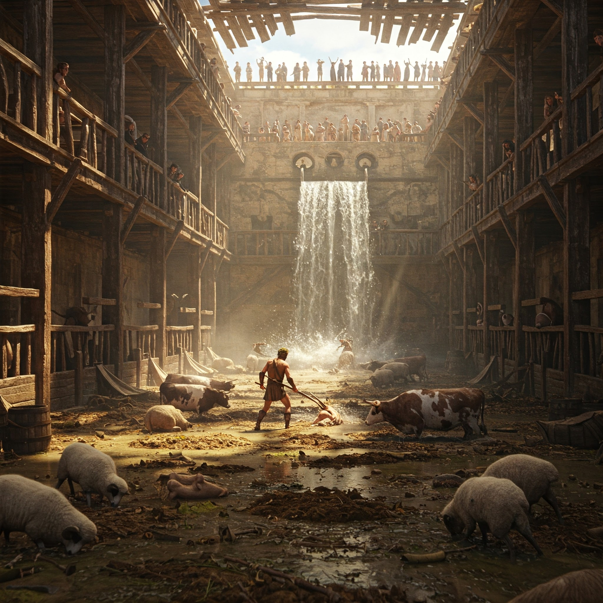

El hedor te golpea antes de que siquiera divises los muros del reino de Élide. Treinta años de estiércol sagrado —de ganado divino— se acumulan en corrales que alguna vez fueron dorados. Ahora son una pesadilla de excrementos secos y moscas zumbantes.
"Ja. ¿Otro 'héroe'?" Augías, el rey, se ríe desde su balcón, tapándose la nariz con un paño bordado. "Ni el mismísimo Poseidón limpiaría esto. Si lo logras en un día... te daré la décima parte de mi ganado." Sus ojos brillan con mentira.
¿Cómo enfrentarás este desafío?
